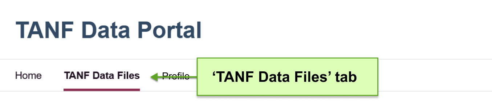
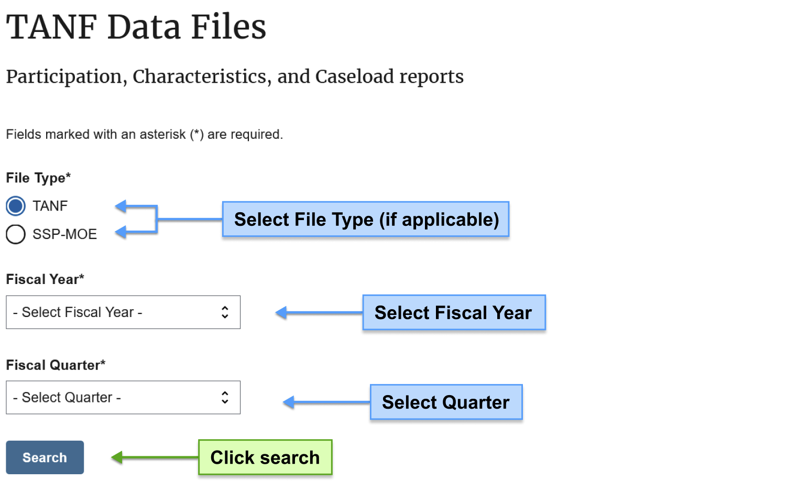
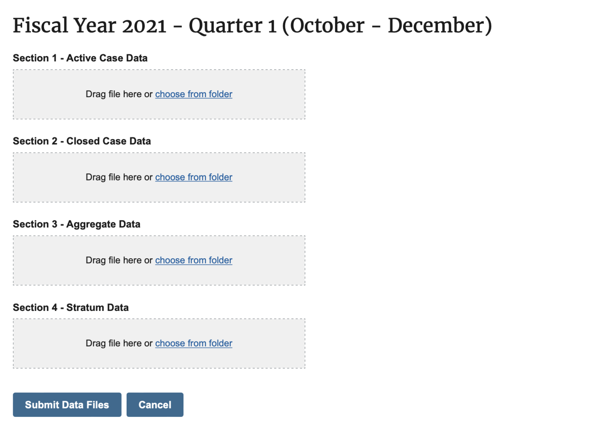
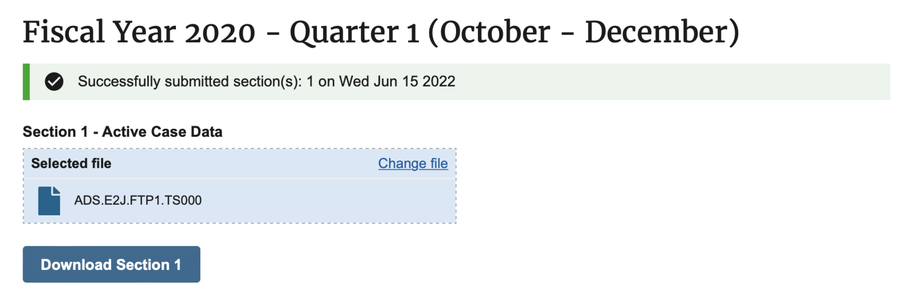
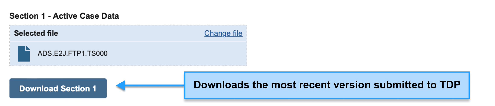
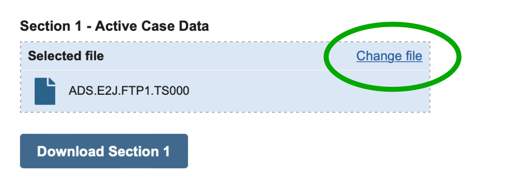

Submitting Data to TDP
Once your request for access is approved by a TDP admin, your account will have access to the ‘TANF Data Files’ page where you’ll be able to submit your quarterly transmission files.
{kind=link}
How to submit data
-
Choose which data you’ll be submitting
On the Data Files page you’ll be able to select the field for ‘File Type’ (multiple options visible only if your program submits TANF & SSP data and/or Program Integrity Audit data), ‘Fiscal Year (October - September)’ , and ‘Fiscal Quarter’ to identify which data you’ll be uploading. Once all fields have been selected, a new area of the page will appear below.
The records within your data files are organized by calendar quarter period, which runs from January 1 to December 31. However, these files must be reported based on the fiscal quarter period, which runs from October 1 to September 30. For example, files that cover Calendar Year 2024 Quarter 4 are to be reported for Fiscal Year 2025 Quarter 1. The accompanying table next to selections is there to help you map the calendar period content within the file to the reporting fiscal period.
 -
Upload your files
You can either drag each file into their appropriate sections (Active, Closed, Aggregate, and Stratum) or click ‘Choose from folder’ on a section to browse your computer for the file.
Note: Section 4 is only required for grantees who have elected to submit a stratified sample of families served in their jurisdiction rather than data for all families.
-
Submit your files
After uploading the files you want to submit, click the ‘Submit Data Files’ button. You should see a confirmation that your sections were submitted!
Upon successful submission of your data files you will also receive an email confirmation from no-reply@tanfdata.acf.hhs.gov (example below).

In the future, TDP will provide more immediate reports about your transmitted data. For now, please expect to receive the transmission reports you’re used to receiving via email within 48 hours of data submission. Note that Tribal TANF grantees do not receive transmission reports by email.
{kind=link}
{kind=link}
{kind=link}
How to retrieve your submitted data
To access a file you’ve uploaded to TDP, you can click the ‘Download Section <#>’ button below any submitted file. For now, this will provide you with the most recent version of that file (if you’ve submitted more than one). Note: TDP will auto-rename files to specify the fiscal period and section (e.g. 2021.Q1.Active Case Data), so depending on your original file-naming conventions, the files you download may have a different name.
{kind=link}
Check out the page Viewing Submission History to learn more about how to access your past data files submitted through TDP.
How to resubmit your data
If you need to replace or revise any file submitted to TDP, you can do so either by dragging a new file into the section(s) you’d like to resubmit or by clicking ‘Change File’. Once the new file(s) are selected, make sure to click the ‘Submit Data Files’ button again to save your changes.
{kind=link}